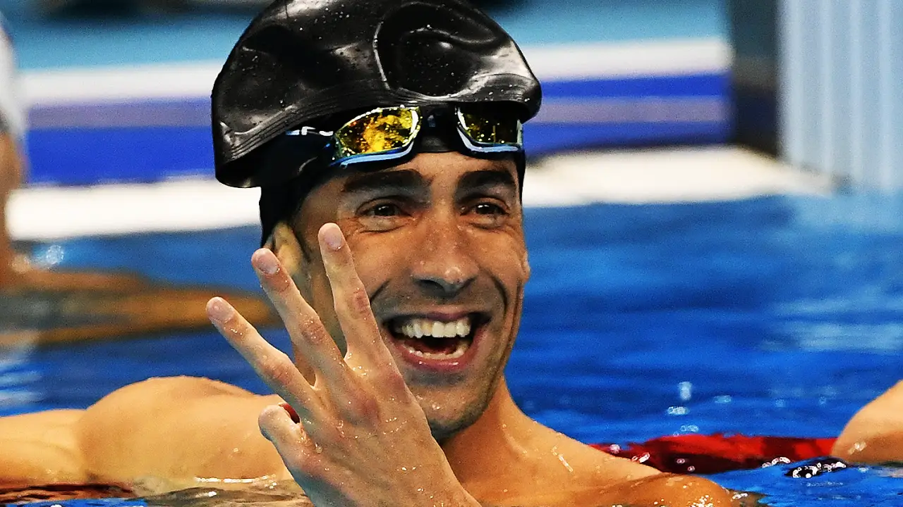
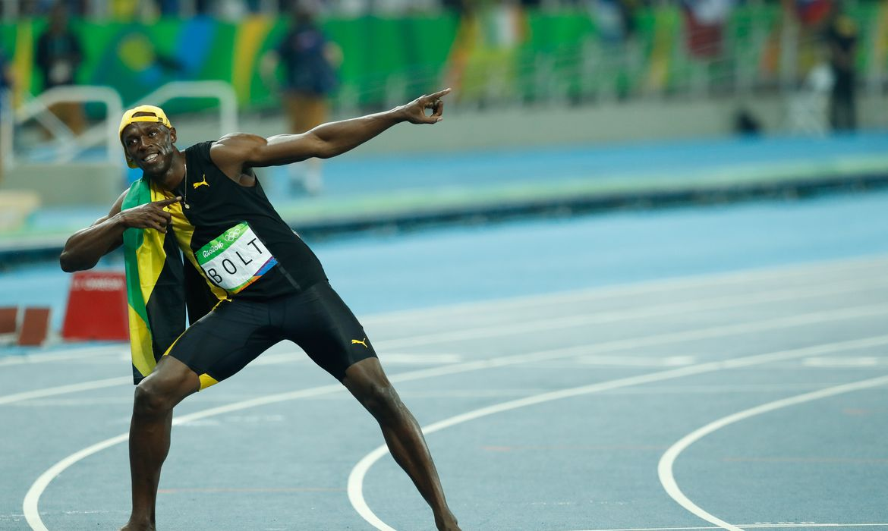
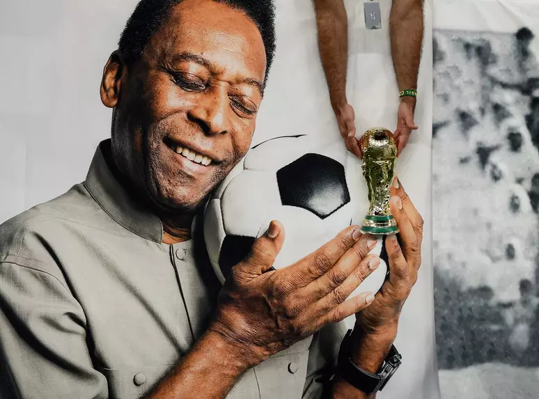

Índice
Michael Phelps
Usain Bolt
Pelé
Michael Phelps
Michael Fred Phelps II é um ex nadador profissional americano, amplamente considerado o maior atleta olímpico da história por bater trinta e sete recordes mundiais.

Usain Bolt
Usain St. Leo Bolt, OJ, OD é um ex-velocista jamaicano multicampeão olímpico e mundial nessa modalidade. Depois de se aposentar como velocista em 2017, teve uma rápida atuação como jogador de futebol.

Pelé
Edson Arantes do Nascimento, mais conhecido como Pelé, foi um futebolista brasileiro que atuou como atacante. Descrito como o "Rei do Futebol", é amplamente considerado como o maior atleta de todos os tempos.

Biobliografia
https://olympics.com/pt/atletas/michael-phelps-ii
https://olympics.com/pt/atletas/usain-bolt
https://brasilescola.uol.com.br/biografia/pele.htm